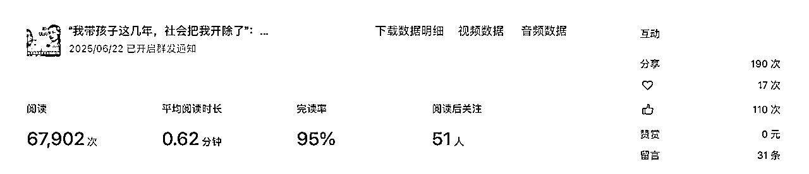

来源：https://puudjd7ny5.feishu.cn/docx/K1DRdzmIhoK1j3xcQYxcUjttnpb
哈喽，我是达师姐，是公众号项目新人小白，独立个人无工作室，只有一个账号，一共更新66篇，流量主一篇赚了300，还吸引到了pr商务合作，产出过十几篇过万文章，本文会po出我所有的真实后台数据，我的经验适合普通人
我之前一直没敢写公众号，因为我觉得自己的文案功底不行，太差，和人家没法比，发出来几个几十个阅读多丢人啊，有的人写了好几年才几十的阅读量，我更不行，后来介绍我入生财的朋友说你可以把写的朋友圈内容，直接发在公众号小绿书上，一秒同步完成，我一想这行啊，没啥成本我愿意做，但尽管这样，我也高估了自己的执行力，发布数据：
1月 12篇
2月13篇
3月 8篇
4月 6篇
5月 2篇
6月12篇
7月13篇
在3月/4月/5月几乎没更新，单月最大更新量13篇，坦白说的确有些随意，真正赚钱的流量主哪有不日更的，单号已经很过分了，但你想，就这个B样儿都能赚钱，我差啥？没你想象的那么难，是个纸老虎罢了
需要满足500粉丝，即可开通流量主，就可以在文中，文末，评论区安插广告，坐等广告分成，是按照阅读量给钱的，阅读量越高，银子越多，我没开通返佣，因为我觉得卖不出去货，还占广告位，也可能是我的认知局限
小伙伴会问，怎么搞到500粉丝？500粉丝可以直接科技，也可以等着自己慢慢涨，我其实推荐直接科技，其实抖音团购达人也是同理，快速试错，降低时间成本
我是1月份开始写的，虽然沥沥拉拉写的也经常断更，但是出了好多爆款，一直到7月份我才满足500粉丝开通流量主，当时公众号上写的预测我的流量主收益是3000+，所以我认为其实慢慢涨不划算，之前的爆款是已经无法插入广告了的，你只能看着流量还在增加，但是收益却是0
如果是纯做个人IP，那就不用买，因为你反正也不拿流量主的钱
在我有40多个粉丝的时候，有几个人后台找我发文，我拒绝了，一看就是骗子，那种足球赛事什么的，我估计就是赌博，那我肯定不能赚这违心钱
后来600多粉丝之后，有正经渠道商pr找我发文了，我报价800，返300，她同意了，我先生问我根据什么定的价，我说瞎定的，我想的是她愿意就合作，不愿意就拉倒，说白了就试试，不要学我，因为我有自己的主业，也有成熟的副业收入项目，所以公众号我就是带着做的，有钱开心，没钱也不耽误啥
是的，这才是我后面的大头收益，我可以分销生财，以及给我自己的项目导流
做个人IP都可以走我这条路，先分享自己的所思所想所见，然后获得流量，爆款，再发一些自己的项目相关的内容，当有人看了几篇你的内容，就像交了你这个朋友，自然而然就成交了，因为她看见的是一个丰满的人，而不是冷冰冰的项目，后面我也会根据他的阶段和需求，推荐进入适合他的社群，圈子
所以我把公众号，称之为我的大朋友圈，以前只有几千人的小朋友圈，现在是我的几万人的大朋友圈了，以前我靠私域朋友圈自动转化，现在靠大朋友圈公众号也是相同的路子
作为资深打工牛马，我们最烦什么样的会议？最烦煞笔领导de不de没完没了，讲些没营养，无法落地，根本不知道一线同志需要什么的虚话，还要让你好好听，又臭又长你又不敢走，没招儿，寄人篱下咱得拿钱，但公众号观众不是啊，他们来参会就想要快速整明白咋回事，还能有些收获，或者开心一笑，都好
我们不给观众钱，所以你无法约束让观众参加你又臭又长的会议
这篇给了290元，阅读量是3万+，你能看到其实底部广告比文中广告高了好几倍，所以底部广告更值钱，so你不用写太长的文章，俗称又丑又长，要让用户尽快能看到底部的广告，增加收益
就像@亦仁说的，其实小号也有大流量，你的文章会进入到流量池子里，如果数据跑的好，点赞，转发，阅读量OK，就会被推荐到更大的流量池子里，第一个池子我觉得是0-300，第二池子是300-1000，第三个池子是1000-10000，当然我只是根据我的数据总结的，不一定正确
你看流量的97%都是推荐，所以是入了池子了，根本没啥自己的流量，我这里有个误区大家要避免，一开始我朋友说发小绿书容易，所以我发的就是小绿书，真的很容易，就是把我发朋友圈的内容，直接复制粘贴上去即可，流量也很不错，出了好几个爆款
但是当我够500粉丝之后，我又发了小绿书发现广告没带上，到处搜说是小绿书不能放广告，然后我就开始研究学习发文章，发现流量下滑很多很多，而且排版我又弄不明白，很丑，而且小绿书比文章在发布时，占的页面大很多，所以我认为这也是公众号在使劲儿推广小绿书的原因之一
发现了没，下面的是小绿书，比上面的文章大好多好多
转发到朋友圈也是一样的
我特意没有截掉下面的评论，这样对比更清晰些
所以小绿书，真的值得做，既有流量，又简单，还不用排版，随手有感悟随手发了，甚至你可以直接就把小绿书当朋友圈用，大朋友圈，还能记录沉淀下来自己的所思所想
后面我打算搭配着发，一个月1-2篇文章，28篇小绿书（有点吹牛逼了，大概率也就更新一半都不错了）
这样内容既有深度，又容易坚持，还符合自己的调性，所有的ip都值得尝试
近两个月我一共发布25篇，阅读量过万的有7篇，阅读量过千的有7篇，如果按过万算爆款就是30%，但其实我只有几百粉丝，所以阅读量能过千也属于异常值，都算上就等于是56%爆款率，也就是进入推荐池子了
我们来拆解下到底为什么爆？
看这篇文章的完播率95%，你以为是写得好？其实是写的短，还没反应过来呢，文章看完了

这篇文章完读率95%，可以说是超高了，这篇文章超超超短小，就是我看视频后的感想，随手发的，所以不用每一篇都长篇大论，只要你写的东西有内容，能引起共鸣，和读者有关，读者能有一定的投射，长短不重要，如果你没啥水平还写的很长，反倒是降低了完读率，用户一打开，就跳出去了，这样无法进入下一个流量池的推荐了
分析：
全职爸妈这类人群谁身边都有几个，每个城市，每个小区都有，覆盖面非常广，哪怕自己不是看完会分享给伴侣，或者朋友，像在告诫和提醒一样，或者是苦主自己，转发给伴侣，来让伴侣意识到自己的价值，所以非常容易引起共鸣和转发，这类选题属于社会热点话题了
也正因为这个话题深深的刺痛了一些人，所以评论区不少人在打架，从而获得了更高的推流，我有好几篇高阅读量的都是这种，评论区要么骂我，要么对骂，原本已经流量暂停的内容，又重新被推荐到更大的流量池子了
这完播率多吓人啊，不知道还真以为超高质量内容呢，但其实只是短，1秒就读完了，再刷5秒评论区，要去接触真实的世界，自己去试，然后接收到真实世界给你的反馈再调整，就会不断的祛魅，这是非常爽的过程
其实我发现有一些伙伴的内容是真的很不错，但是浏览量只有几十，我很惋惜，因为他值得被更多人看见，就是因为标题和头图没有用心调整，把所有的力气都花在内容上的
你在追你老婆的时候是猛猛叨彻你自己，等结婚后不在意了才会中年发福，因为你知道现在发福也不影响啥了，老婆孩子都有了，但是追老婆的时候为啥卖力气换衣服，弄造型，健身减肥，搞这些外在形象呢？就是因为你知道不能让女孩子通过你邋遢的外表看到你优质的内在，公众号文章也是一样的，你不能标题随便一写，一句我内容号就完事了
在你还是个几百几千粉丝的小号阶段，请把追女孩子的状态拿出来，好好整理下头图和标题，标题一定要切中要害
你能为人家解决什么问题？还是你能提供新知？或者是扎到他了很痛？
一定要具体，是那种现象，哪个人群，发生了什么事儿，结果如何交代清楚，就会很有灵魂了，写不出来就喂给AI，让ai写，他写20个你选，以我的内容为例：
解决方案：
失业潮真的来了！【内含市场下行期的解决方案】
我熬走两任领导了：在职场，“活得久”才是硬核实力
新知
我156cm，生娃胖20斤，却是他眼里的“超模”：幸福的法宝
在哈尔滨，存了100万后，生活有哪些变化？
扎心情绪
“我带孩子这几年，社会把我开除了”：全职父母的无声失业
公司考核优秀名单一半是宝妈！狠狠打了谁的脸？
你大概率和我一样，是个普通人，早八晚五得牛马，偶尔还得加班，你大概率也没团队没工作室，也不咋会AI更不懂什么工作流，知识库，也不会弄什么对标，是的，我们真的很普通，所以你要和我一样接受
接受我是个很普通的人，不是什么大佬，也没有工作室，大概率第一个月不得法，做不起来的，我第一个月只有几十个阅读，甚至几个阅读，接受我写了7个月才有500粉丝才开通流量主（所以我建议你直接科技），接受普通人的初始值，然后不断的迭代
没啥子人看才是真实的，因为你我那么普通，哪能一做就成，一写就爆款呢？
那怎么熬过去呢？
把它当个屁！就别太当回事，别用新领域从0到1的阶段去审视，去评判自己
只要你不发在认识人的圈子里，他们就不知道你做的烂，等你数据好了，再发出去让别人知道，事以密谋
不要更新了一个月，连一个爆款都没有，就否定自己的价值，这是个过程，是公众号平台和你相识相熟的过程，就像你谈恋爱不能认识第一天就拉手一样，总得铺垫铺垫
出一个爆款，会带动前面的阅读量的，所以你的文章现在可能只有几十几百的浏览量，但是过阵子可能原来的几十几百的普通阅读量，会有均值提升，被后面的爆款带动起来了
还有一种，就是明明当时发布时流量普通，但是过阵子，突然莫名其妙的爆了，可能是后面相关搜索词变多了，可能是后面的爆款联动，可能是老天在助力于你
这些都是我真实经历的，一时的数据不代表好坏，不要轻易怀疑和否定自己
普通人想逆袭就得做点不普通的事儿，尽量不断更，当然这很难，所以只有少数人做得到，那种完全不动脑的水文没意义，是另一码事，但你可以让自己做60分的高频词输出，而不是90分的低频次输出，相比较而言，60分高频词更占优势，迭代速度更快，而且流量更稳定
我的流量非常不稳定，也有一部分原因是断更，更新不稳定，想起来就更，这几天闹心就不更，太随意，所以我每次更新，都要再重新接受冷启动的感觉是的，这就是断更代价
持续做事情，你会得到确切的结果，是成，还是不成
比一直以为自己行，或者以为自己不行，要好得多
行就行，不行就换赛道
怎么着儿，咱都不亏
我是infj高敏感高内耗，极度怀疑自己，不配得感非常重，常常为别人一句话成宿成宿分析睡不着觉，我曾一度和自己的高敏感对抗，非常讨厌自己的敏感，后来慢慢通过不断的做项目拿结果我心态变得更强大了，我仍然是那个高敏感，但我能开始掌控和使用我的高敏感天赋了
老天很公平，给高敏感极强的网感也给她自我怀疑容易断更，给有钝感力的人超强的执行力也给她没网感干努力收效甚微
赚钱是最好的修行，我们都在这一路打怪升级成为更好的自己
最后，感谢我的榜样@梁靠谱，她的稳定输出营业这件事本身，就带给我巨大的精神力量